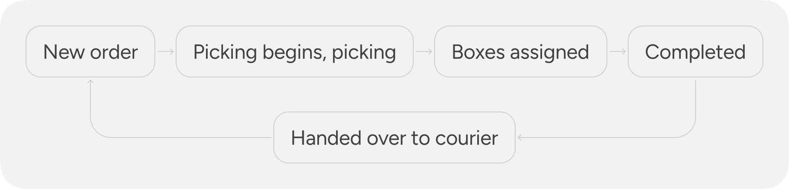
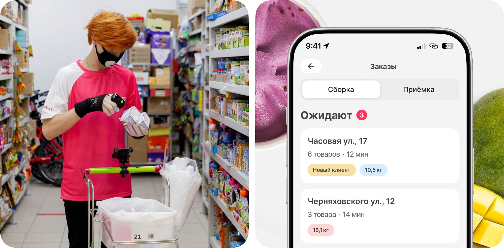
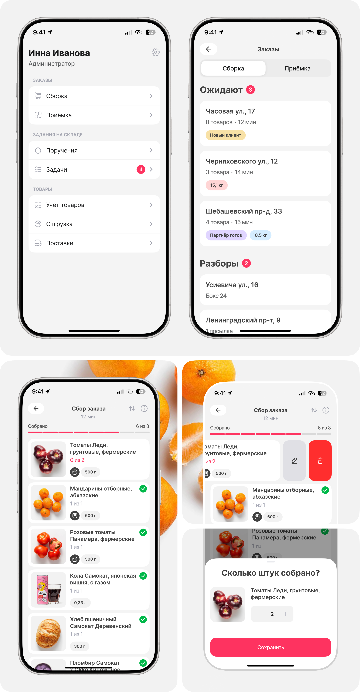

Order picking in a dark store
iOS
Android
B2B
2025

Order picking is one of the key products at Samokat. The business prioritizes fast order picking and quick handoff to delivery
Metrics
• Time to Task
• Speed of taking a task into work
• Product quality
• Speed of taking a task into work
• Product quality
DAU
7K+
Dark Stores
2 400
The picker's task is to quickly take the customer's order into work, start picking it as soon as possible, specify the box numbers, complete the picking process, and hand the assembled order over to the courier for delivery to the client.


The hypothesis that started it all
Dark store products have existed almost since the company's founding, so the quality of the current design solutions raised doubts about their relevance
– Do they really work well?
– Can we do better and positively impact user experience metrics?
(Time to Task, number of errors, usability)
My role
Worked end-to-end on the project: from discovery and problem definition through design to final release
• Conducted field research in 2 dark stores
• Conducted 6 interviews with pickers and dark store admins
• Identified key issues affecting Time to Task, errors, and task pickup speed
• Conducted 10 UX tests
• Launched an A/B test with the product team across 260 dark stores
• As a result of UMUX surveys, 359 out of 402 users rated the updates 5/5
• Released the updates to 2 400 dark stores
User Pain Points
Picked items in the order remain at the top, requiring constant scrolling
Have to reach for the button to complete the order
Often forget to press the «Start Picking» button
Often forget to press the «Proceed to Box Entry» button
The main insight
Pickers move quickly around the dark store, scanning items with a ring scanner; the application needs to adapt to their workflow
Hypotheses
Starting the picking process by scanning an item eliminates the error of starting without pressing the button
Time to Task, Errors
Automatic screen transitions remove the need to press buttons
Time to Task, Errors
Moving picked items to the bottom speeds up picking, keeping only the needed items at the top
Time to Task
Changing the display order accelerates the process by starting from the back of the warehouse
Time to Task
Auto-opening the next task reduces order pickup time
Task Pickup Speed
Completing the picking process via scanning speeds up the transition to the next task
Task Pickup Speed
Start of assembly
The process begins with item scanning, with an option for pickers to reverse the list sorting

Specifying the box numbers
The box number screen appears automatically once the last item in the order is scanned

Order Picking Completion
The picking process can be completed by scanning a barcode
Next task
A new picking task opens automatically

Result
-2,3%
Time to Task
-2 errors
Only scanning errors remain
4,7 / 5
UX score based on surveys
Released
2 400 dark stores
A/B test
260 dark stores
In the ideal scenario, an order can be picked and completed without touching the smartphone, using only the ring scanner